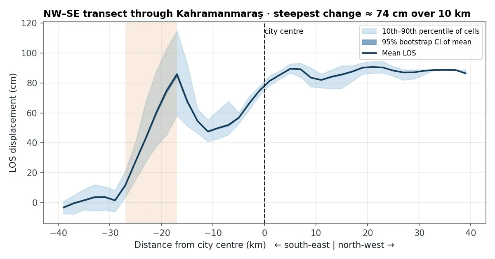
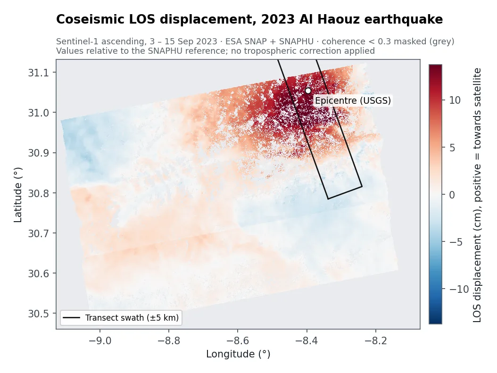

The question
After a large earthquake, engineers and planners need to know where the ground moved and by how much: it guides damage surveys, rebuilding and hazard maps. GPS stations measure precisely but only at a few points. InSARInterferometric SAR: comparing the phase of two radar images taken days apart reveals ground movement of centimetres or less. measures everywhere the satellite can see.
What I did
- Paired radar images from before and after each earthquake: Sentinel-1, 29 January and 10 February 2023 for Türkiye, and 3 and 15 September 2023 for Morocco.
- Built the interferogram in ESA SNAP: aligned the images, removed the effect of terrain with a digital elevation model, and filtered noise.
- Unwrapped the fringes with SNAPHU (unwrappingRadar phase repeats every half wavelength (2.8 cm). Unwrapping counts the repeats to rebuild one continuous displacement map.) and converted them to centimetres of movement along the line of sightLine of sight: radar only measures movement towards or away from the satellite, not up, down or sideways separately..
- Removed unreliable pixels where coherenceHow similar the two radar images are, from 0 to 1. Low coherence (vegetation, water, big changes) means the measurement isn't reliable. was below 0.3 (Morocco), and summarised the scene with robust statistics.
- Drew transects, strips across the area, to show how movement changes with distance, with bootstrapResampling the data many times to see how much a result could vary by chance, which gives a confidence interval. confidence intervals.
What the maps show


Türkiye. Along a north-west to south-east line through Kahramanmaraş, the ground's movement changes by about 74 cm over just 10 km, 17 to 27 km south-east of the city. That's where the main rupture crossed. Statistics for the city district match the SNAP output from my MSc dissertation exactly.
Morocco. An area just south of the epicentre moved up to about 15 cm towards the satellite, while the surrounding mountains barely moved.
How sure can we be?
- One viewing direction. Radar only measures movement along its line of sight, so up-down and sideways motion can't be separated from one image pair.
- Relative values. The numbers are relative to a reference point chosen by the unwrapping software. Differences across the map are what matter.
- No atmospheric correction or GPS check. Water vapour can add a few centimetres of error, especially in mountains.
- Processing seams. Straight-edged steps in the map come from how the data is stitched, not from tectonics.
What a client gets
- Displacement maps (GeoTIFF) and profiles across sites of interest
- A table of movement statistics per area
- A plain-language note on what the numbers can and can't support
- For monitoring: the same chain rerun on each new Sentinel-1 pass